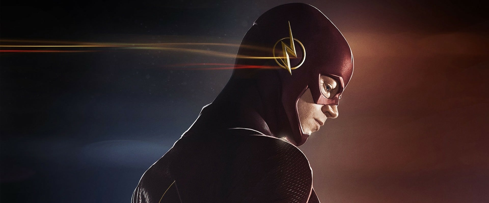

The Flash
Movie Info
| First Air Date | : | 7 Oktober 2014 |
After a particle accelerator causes a freak storm, CSI Investigator Barry Allen is struck by lightning and falls into a coma. Months later he awakens with the power of super speed, granting him the ability to move through Central City like an unseen guardian angel. Though initially excited by his newfound powers, Barry is shocked to discover he is not the only "meta-human" who was created in the wake of the accelerator explosion -- and not everyone is using their new powers for good. Barry partners with S.T.A.R. Labs and dedicates his life to protect the innocent. For now, only a few close friends and associates know that Barry is literally the fastest man alive, but it won't be long before the world learns what Barry Allen has become...The Flash.